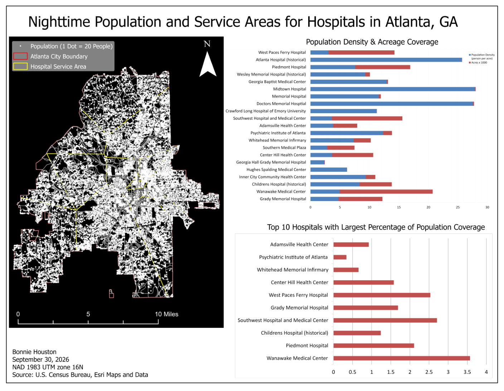
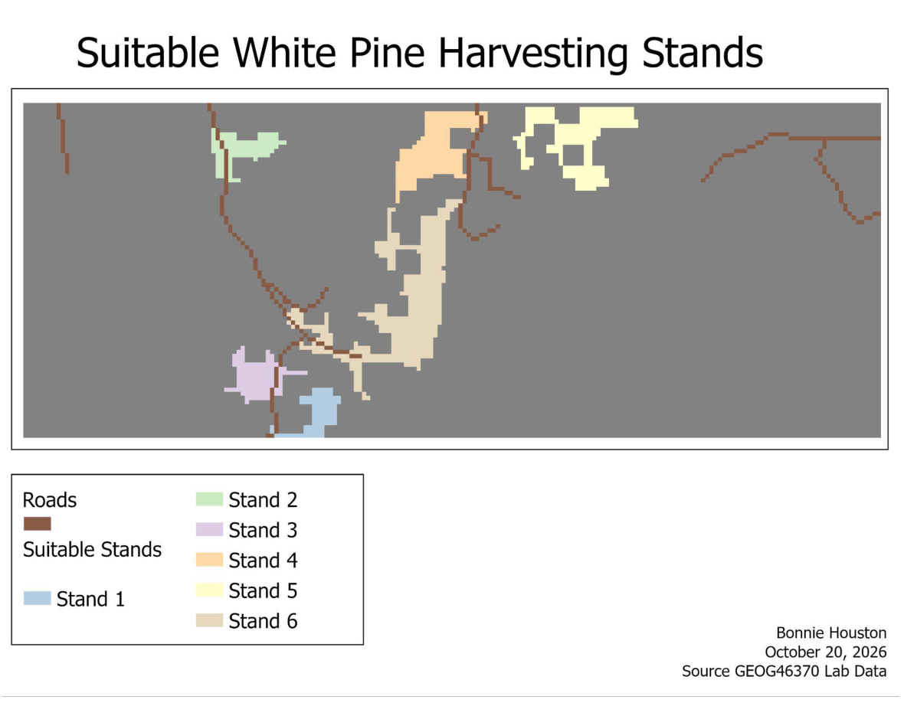
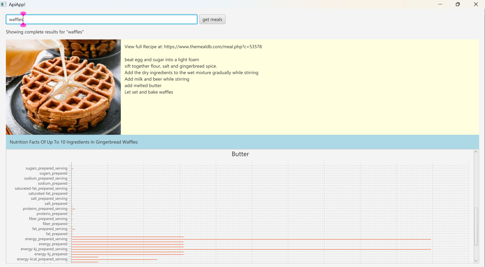

Ensemble learning
Machine Learning · Python
AdaBoost from Scratch
A custom implementation of the AdaBoost classification algorithm, with model evaluation and an accompanying technical presentation.
View project →I'm a data science student with a minor in Geography, interested in machine learning, statistical analysis, geospatial modeling, and data visualization.
Explore my projects View GitHubSelected work in machine learning, statistical modeling, geospatial analysis, and application development.
A custom implementation of the AdaBoost classification algorithm, with model evaluation and an accompanying technical presentation.
View project →Estimating household electricity use through time-series forecasting and predictive model evaluation.
View project →
Estimated nighttime populations served by Atlanta hospitals using census-block centroids, Thiessen polygons, spatial joins, and population summaries.
Browse GIS work on GitHub →
Selected qualifying white pine stands using distance from water, raster overlays, contiguous-region analysis, and minimum area criteria.
Browse GIS work on GitHub →
Interactive desktop application integrating TheMealDB and Open Food Facts APIs to retrieve meal recipes and visualize nutrition information for up to ten ingredients. Built with Gson, background threading, and dynamically generated JavaFX bar charts.
View application repository →Project images are from my own GIS lab layouts and a screenshot of my running JavaFX application. Abstract graphics for the machine learning projects are decorative, not experimental results.
I enjoy combining programming, statistical methods, and spatial data to analyze real-world questions. I'm interested in both data science and geospatial analytics opportunities.
Explore my code and other projects on GitHub (@BonnieH22).